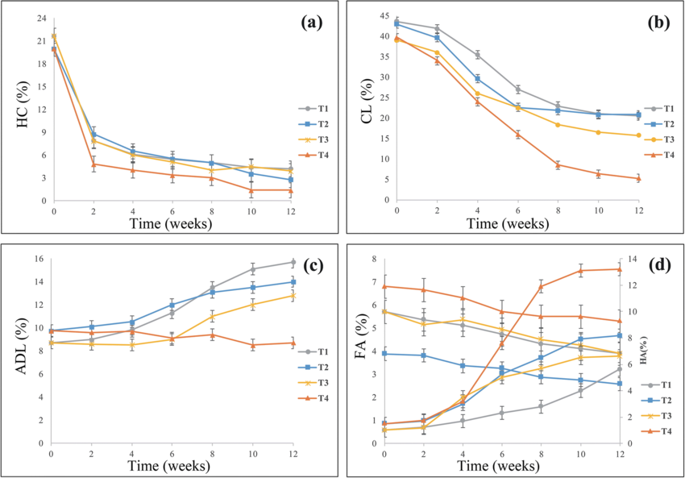
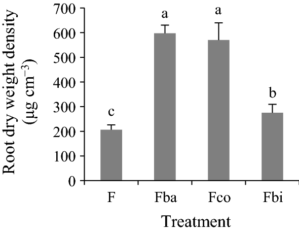
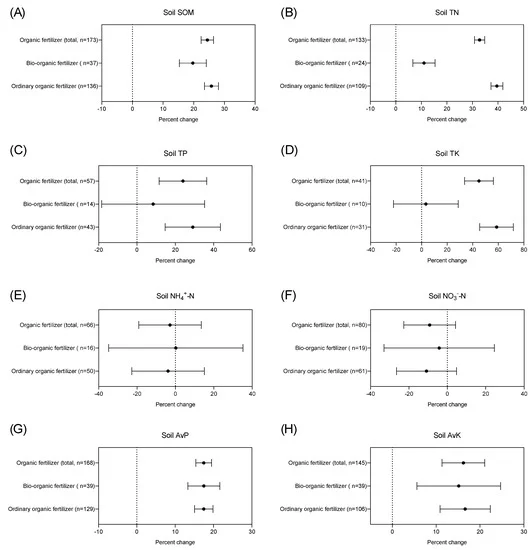

Turning waste paper into living soil
We recycle waste paper and plant biomass into a fully bio-based fertilizer through enzyme-assisted composting — cutting reliance on chemical inputs while restoring soil health. Soil Bot, our custom AI assistant, explains the science, the prototype, and the results below.
Two crises, one overlooked link
Paper waste is piling up
China alone consumed over 21.84 million tons of corrugated paper between January and October 2025 — and most of it was simply dumped rather than reused.
Chemical fertilizer is poisoning soil
Heavy metal contamination from chemical fertilizers disrupts nutrient cycles and kills helpful microorganisms, contributing to roughly 500,000 poisoning cases every year.
Our solution connects the two: waste paper becomes the raw material for a safer, bio-based fertilizer.
Enzyme-assisted composting
Enzymes target the protein-based binders, starch coatings, oils, and grease in paper ink, loosening cellulose fibers and clearing out residues that would otherwise harm microbes or block nutrient uptake — something raw chemical treatment can't do cleanly.
Mixing carbon-rich paper with nitrogen-rich plant biomass — specifically Malva sylvestris — drives these gains compared to chemical alternatives. Over 12 weeks, hemicellulose and cellulose break down while stable fulvic and humic acids build up, forming rich humus.
C₆H₁₀O₅ + 6O₂ → 6CO₂ + 5H₂O + energy (heat)
(C₆H₁₀O₅)n + O₂ → CO₂ + H₂O + Humus
What the data shows
Figures from the research underpinning our approach — tracking humus formation, nutrient response, and root growth across treatments.

🔍Hemicellulose (HC) and cellulose (CL) decline while fulvic (FA) and humic (HA) acids build up over 12 weeks — the signature of maturing humus.

🔍Root dry weight density jumps sharply under bio-based treatments compared to the untreated control (F).
Organic and bio-organic fertilizers consistently push soil organic matter, nitrogen, phosphorus, and potassium upward.

🔍The same nutrient metrics held up across a wider dataset — the effect isn't a one-off result.
Three parts, one composting cycle
Mini Paper Shredder
Mounted on top; cuts paper and plant matter into small pieces to maximize surface area for faster microbial decomposition.
Sealed Container
A blue container holding the mixture, with small holes on the sides for the controlled aeration aerobic microorganisms need.
Sprayer
An orange water sprayer connected by tube, evenly applying water and enzymes to maintain humidity and microbial activity.
The 8-step mechanism
- 01Collect waste paper and organic plant biomass such as Malva sylvestris, then shred them.
- 02Place shredded materials into the container with soil and vegetable waste, for natural microorganisms.
- 03Add water for moisture and enzymes to break down ink residues and speed up breakdown.
- 04Mix all components thoroughly for even distribution.
- 05Close the container; the small holes allow air circulation for aerobic microbes.
- 06Leave the mixture to decompose through composting.
- 07Water regularly to sustain optimal microbial conditions.
- 08Harvest the natural, nutrient-rich, dark, crumbly, earthy-smelling bio-fertilizer.
Roots don't lie
Future work: a full-scale, automated machine where waste paper, enzymes, and water can be added directly — running independently to yield bio-fertilizer automatically on commercial farms.